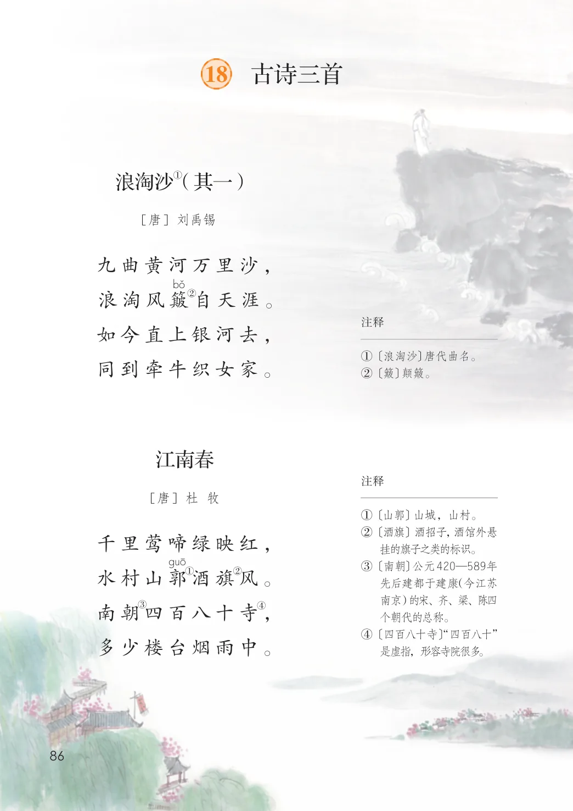
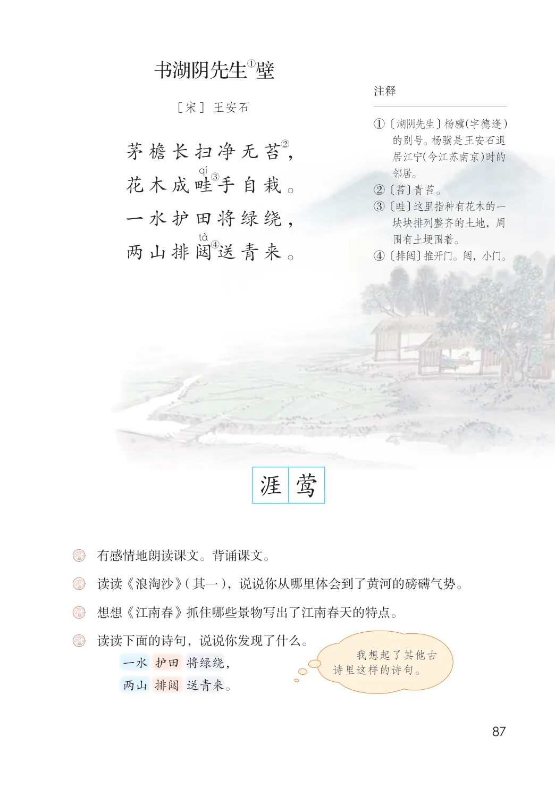

第六单元 · 第 18 课
古诗三首
文字内容 PDF 第 91 页
① （其一）浪淘沙
[唐] 刘禹锡
九曲黄河万里沙，
②浪淘风簸自天涯。
文字内容 PDF 第 92 页
①壁书湖阴先生
课后练习
- 有感情地朗读课文。背诵课文。
- 读读《浪淘沙》（其一），说说你从哪里体会到了黄河的磅礴气势。
- 想想《江南春》抓住哪些景物写出了江南春天的特点。
- 读读下面的诗句，说说你发现了什么。我想起了其他古诗里这样的诗句。一水 护田 将绿绕，两山 排闼 送青来。
原版对照
原书页面与全部插图
点击图片可查看大图。

